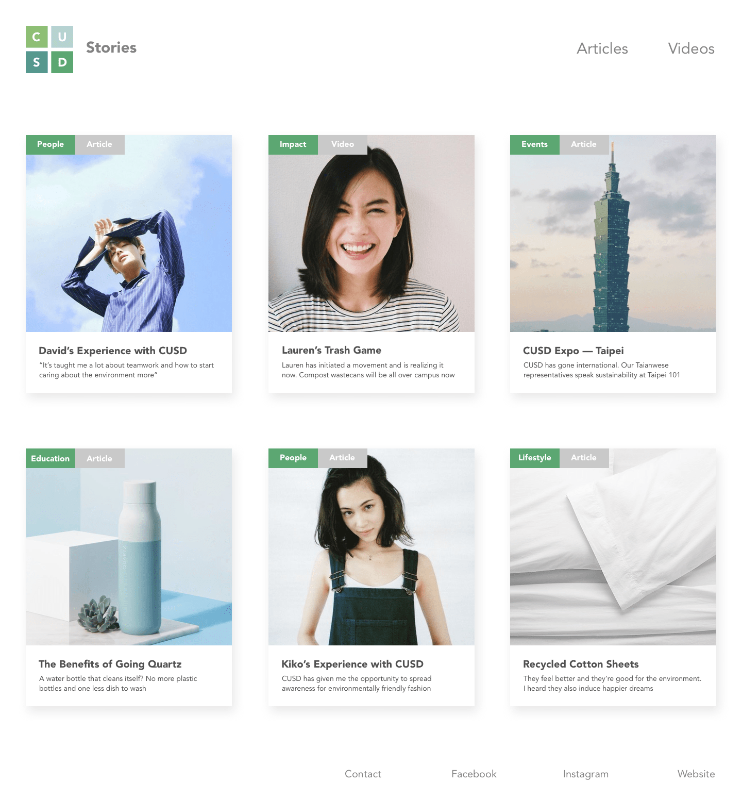
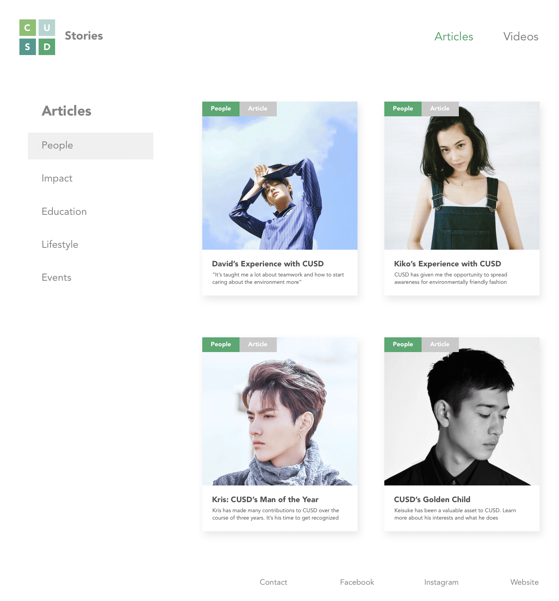
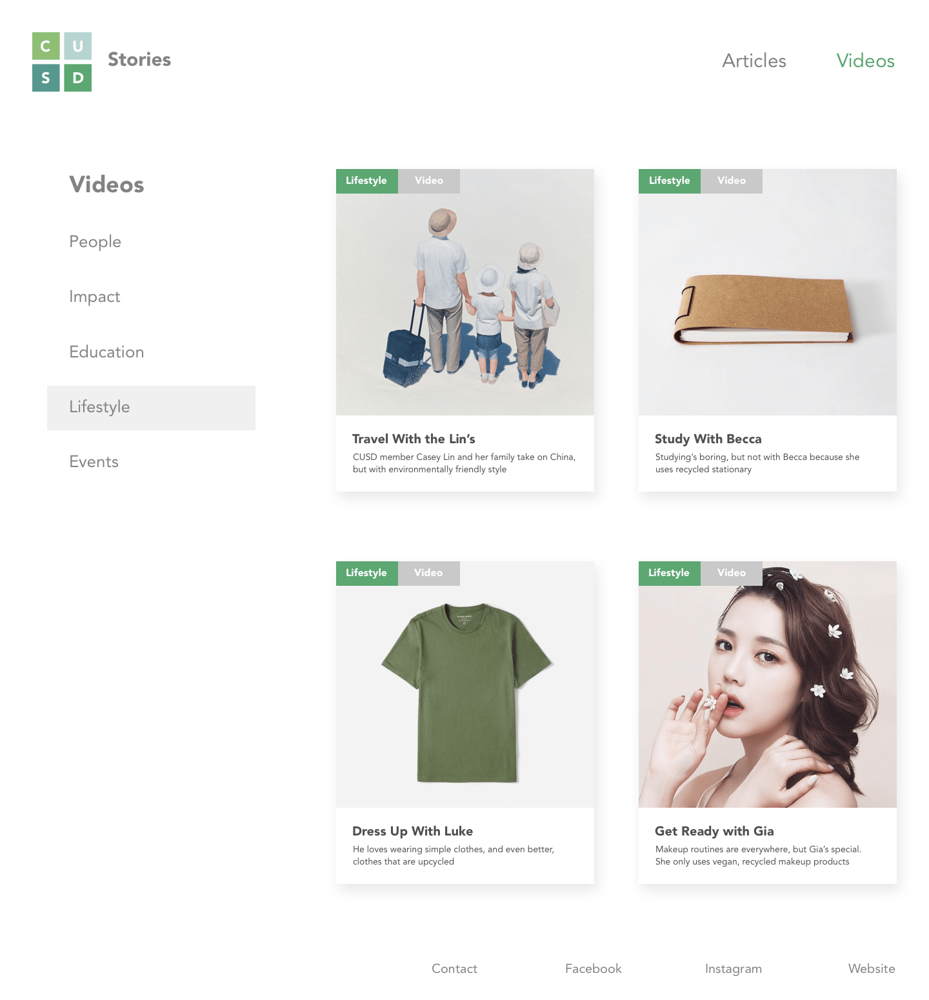
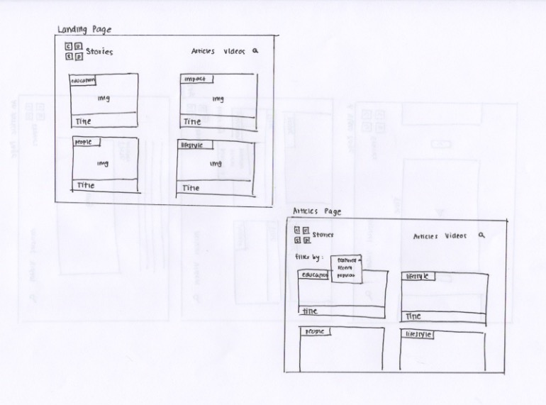

I designed a new blog site for CUSD that will aim to promote students within the project team, general sustainability principles and ongoing CUSD projects. I have created high fidelity wireframes with Sketch shown below. I used CUSD's colors to maintain brand identity but the other aspects of the final visual design are simpler and more modern than the main CUSD website. The variation in visual design is meant to signify a separation between the blog and the main website. The brainstorming process is explained below the wireframes.
The Final Mockup
Home Page
Articles Page
Videos Page
The Design Process
Initial Ideas
Navigation:
I wanted the navigation of the site to be very simple and intuitive. Since the blog is completely new, CUSD would not have a lot of content to post in the beginning. Thus, I opted (for now) to only include two links in the navigation bar: Articles and Videos. During discussion, it seemed that my team and I would only produce written and video content and doing so would best suit our needs.
Layout:
While the header is the key for navigation, I wanted the layout of each page on the blog to emphasize the content. Therefore, in the sketches below, the blocks of content take up more than half of the screen space. A grid layout will keep the content organized and large-sized blocks will give significant room for images to be seen. I think that pairing articles and videos with beautiful thumbnails will not only make for a better visual impact but also speak better with CUSD’s brand identity, which focuses heavily on image/block motifs.
Content Categorization:
Within Articles and Videos, we wanted to define key sub categories. After some brainstorming, my team and I decided on five categories: People, Impact, Education, Lifestyle and Events.
1. People: one member within the team wanted to conduct interviews of people within the organization and we thought a “people” category would best represent content such as student interviews, student spotlights etc.
2. Impact: this category would encompass any content that focuses on impact, whether that impact be caused by a student, a teacher, an event or a product launch.
3. Education: Since one of the key focuses of creating this blog was to promote sustainability principles, we thought that content educating users on sustainability and environmentally friendly practices would be both relevant and beneficial for the Cornell community.
4. Lifestyle: We not only wanted to educate our users on sustainability but show them HOW sustainability can easily be integrated into anyone’s daily life.
5. Events: Since CUSD hosts a number of events throughout each semester and collaborates with other organizations to host even more, we thought a category highlighting these events would be a significant addition to the blog.
As shown in the sketches below, on the top-left corner of each block of content, there will be a tag that will immediately inform to the user which category the article/video belongs to. I believe that since the team placed a strong emphasis on these five categories, it is extremely important to represent them through a visual cue.
Initial Sketches
Reiterations
After asking some people and the team to look over the sketches, there were some key points that I thought I should address:
1. Since articles and videos are the only two mediums of content that will be posted, each block of content should be labeled as either “article” or “video” to make navigation easier.
2. Since there is not much content to post for now, a search feature and filtering by recent/popularity seems to lack much use for now since a user can easily scroll through less than 10 blocks of content
3. A strong emphasis on the five subcategories was expressed but when going to the articles or videos page there is no way to filter by each of the five subcategories. While I expressed above that filtering through 10 blocks of content may lack use, I think that since the five subcategories (agreed by the team) are so essential that they should act as mediums of content organization.
4. My team lead said that articles should link to Medium pages and videos should link to the CUSD youtube channel. Therefore, there is no need for a single article or single video page anymore.
Second Sketch
Updates:
1. I removed the search feature and the filter by most popular/recent function along with the single article/video pages.
2. I added a second tag on the upper-left corner of each block of content to represent whether the content block is an article or video.
3. On the landing page, I changed the layout to have 3 blocks of content per row because a quick check through HTML/CSS prototyping showed that 2 per row would have made for extremely wide blocks.
4. On the Articles and Videos page I included a sidebar on the left side that acts as a way for users to filter by the five subcategories